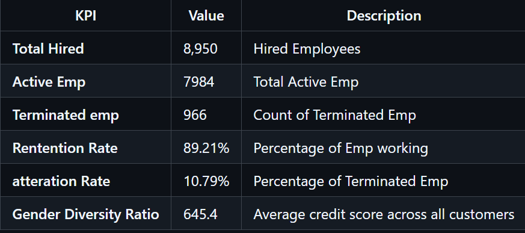
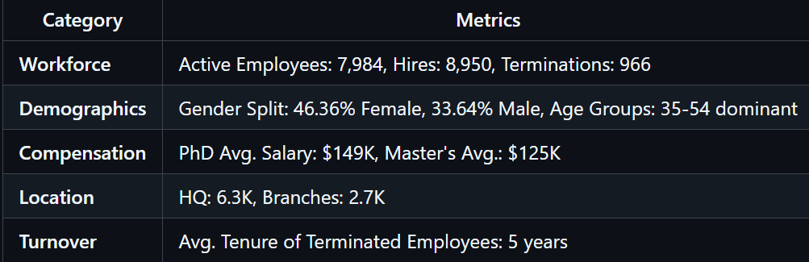

Project
HR Dashboard
Tools: Power Bi
Project Type: E2E Data Cleaning, EDA, Visualization
Relevant Links:
GithubOverview
A Power BI dashboard providing actionable insights into workforce dynamics, including hiring trends, attrition risks, compensation analysis, and demographic distribution.ership, and product usage.
Business Problems
-
- High Attrition: 966 terminations (10.8% rate) could indicate cultural, compensation, or growth-related issues.
- Age Concentration: 35-54 age group dominates—risks future leadership pipeline gaps.
- Branch Underrepresentation: Only 2.7K employees in branches vs. 6.3K at HQ—potential imbalance.
- Salary Disparities: Wide salary ranges for similar roles/education levels (e.g., $117K–$153K).
Key Performance Indicators (KPIs)

Workforce Metrics

Summary of Insights
-
- 8,950 new hires in FY23, but 10.8% attrition rate signals retention risks.
- Female PhDs outearn males in similar roles, but Master's holders show narrower gaps.
- Employees leaving after an average of 5 years suggests potential dissatisfaction among mid-career employees.
- PhDs earn ~20% more than Master's holders, emphasizing upskilling incentives.
Recommendations
-
- Audit salaries by role/gender to ensure fairness.
- Expand recruitment of male candidates in underrepresented areas.
- Incentivize HQ-to-branch transfers with relocation bonuses.
- Offer certifications in in-demand skills (e.g., IT, Finance).
- Mentor younger employees (More than 35) to prepare them for leadership roles.